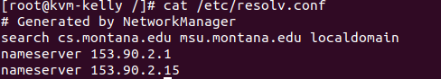

Linux Filesystem Hierarchy
References: - UaLSAH - Chapter 6 - The Filesystem - TLCL - Chapter 3, Guided Tour
Everything is a File
Unix tries to make everything a file:
- Processes are a file -
/proc/###- Not actual file and directories on the system
- A glimpse into the brain of the kernel
- Devices are a file -
/dev- (block or character and Major and Minor numbers)/dev/sdaand/dev/sda1- ‘sd’ - seta disk - ‘1’ the first partition
/dev/lp0/dev/input/mouse0- connection for mouse/dev/null- dumping ground for output that does not want to see/dev/random- used for random input
A description and comparison to where Microsoft Windows stores things and where Mac OS X stores things may be helpful.
- MS-DOS and Windows
- Usually first disk is seen as drive
C AandBwould be floppy disksDcould be a number of things- not really a naming convention to tell you whats going on
- Usually first disk is seen as drive
- Mac OS X
- Mostly like UNIX/Linux
- but, Mac hides stuff in the GUI (finder simplifies things)
- terminal will show these
- Mostly like UNIX/Linux
Processes /proc
Every time a program runs, it is assigned a process id, or a PID, number in the /proc/ directory.

proc screenshot
- blue numbers is a ‘directory,’ and inside and file containing info about the process
- again, not actually on the filesystem
Devices /dev

devices (/dev) directory
- devices represented as files
- black background represents devices
Terminal output for /dev directory
$ cd /dev $ ls -l crw-r--r--. 1 root root 10, 235 Feb 10 18:49 autofs drwxr-xr-x. 2 root root 140 Feb 10 18:49 block drwxr-xr-x. 2 root root 80 Feb 10 18:49 bsg drwxr-xr-x. 3 root root 60 Feb 10 18:49 bus lrwxrwxrwx. 1 root root 3 Feb 10 18:49 cdrom -> sr0 drwxr-xr-x. 2 root root 2760 Feb 10 18:49 char crw-------. 1 root root 5, 1 Feb 10 18:49 console lrwxrwxrwx. 1 root root 11 Feb 10 18:49 core -> /proc/kcore drwxr-xr-x. 4 root root 80 Feb 10 18:49 cpu crw-------. 1 root root 10, 62 Feb 10 18:49 cpu_dma_latency drwxr-xr-x. 7 root root 140 Feb 10 18:49 disk drwxr-xr-x. 3 root root 80 Feb 10 18:49 dri crw-rw----. 1 root video 29, 0 Feb 10 18:49 fb0 lrwxrwxrwx. 1 root root 13 Feb 10 18:49 fd -> /proc/self/fd crw-rw-rw-. 1 root root 1, 7 Feb 10 18:49 full crw-rw-rw-. 1 root root 10, 229 Feb 10 18:49 fuse srwxrwxrwx. 1 root root 0 Feb 10 18:49 gpmctl crw-------. 1 root root 10, 228 Feb 10 18:49 hpet drwxr-xr-x. 2 root root 0 Feb 10 18:49 hugepages crw-------. 1 root root 10, 183 Feb 10 18:49 hwrng lrwxrwxrwx. 1 root root 12 Feb 10 18:49 initctl -> /run/initctl drwxr-xr-x. 3 root root 220 Feb 10 18:49 input crw-r--r--. 1 root root 1, 11 Feb 10 18:49 kmsg crw-rw-rw-. 1 root kvm 10, 232 Feb 10 18:49 kvm lrwxrwxrwx. 1 root root 28 Feb 10 18:49 log -> /run/systemd/journal/dev-log crw-rw----. 1 root disk 10, 237 Feb 10 18:49 loop-control drwxr-xr-x. 2 root root 60 Feb 10 18:49 mapper crw-------. 1 root root 10, 227 Feb 10 18:49 mcelog crw-r-----. 1 root kmem 1, 1 Feb 10 18:49 mem drwxrwxrwt. 2 root root 40 Feb 10 18:49 mqueue drwxr-xr-x. 2 root root 60 Feb 10 18:49 net crw-rw-rw-. 1 root root 1, 3 Feb 10 18:49 null crw-------. 1 root root 10, 144 Feb 10 18:49 nvram crw-r-----. 1 root kmem 1, 4 Feb 10 18:49 port crw-------. 1 root root 108, 0 Feb 10 18:49 ppp crw-rw-rw-. 1 root tty 5, 2 Feb 12 14:26 ptmx drwxr-xr-x. 2 root root 0 Feb 10 18:49 pts crw-rw-rw-. 1 root root 1, 8 Feb 10 18:49 random drwxr-xr-x. 2 root root 60 Feb 10 18:49 raw lrwxrwxrwx. 1 root root 4 Feb 10 18:49 rtc -> rtc0 crw-------. 1 root root 251, 0 Feb 10 18:49 rtc0 brw-rw----. 1 root disk 8, 0 Feb 10 18:49 sda brw-rw----. 1 root disk 8, 1 Feb 10 18:49 sda1 brw-rw----. 1 root disk 8, 2 Feb 10 18:49 sda2 brw-rw----. 1 root disk 8, 3 Feb 10 18:49 sda3 crw-rw----. 1 root disk 21, 0 Feb 10 18:49 sg0 crw-rw----. 1 root cdrom 21, 1 Feb 10 18:49 sg1 drwxrwxrwt. 2 root root 40 Feb 10 18:49 shm crw-------. 1 root root 10, 231 Feb 10 18:49 snapshot drwxr-xr-x. 3 root root 240 Feb 10 18:49 snd brw-rw----. 1 root cdrom 11, 0 Feb 10 18:49 sr0 lrwxrwxrwx. 1 root root 15 Feb 10 18:49 stderr -> /proc/self/fd/2 lrwxrwxrwx. 1 root root 15 Feb 10 18:49 stdin -> /proc/self/fd/0 lrwxrwxrwx. 1 root root 15 Feb 10 18:49 stdout -> /proc/self/fd/1 crw-rw-rw-. 1 root tty 5, 0 Feb 12 13:25 tty crw--w----. 1 root tty 4, 0 Feb 10 18:49 tty0 crw--w----. 1 root tty 4, 1 Feb 10 18:49 tty1 crw--w----. 1 root tty 4, 10 Feb 10 18:49 tty10 crw--w----. 1 root tty 4, 11 Feb 10 18:49 tty11 crw--w----. 1 root tty 4, 12 Feb 10 18:49 tty12 crw--w----. 1 root tty 4, 13 Feb 10 18:49 tty13 crw--w----. 1 root tty 4, 14 Feb 10 18:49 tty14 crw--w----. 1 root tty 4, 15 Feb 10 18:49 tty15 crw--w----. 1 root tty 4, 16 Feb 10 18:49 tty16 crw--w----. 1 root tty 4, 17 Feb 10 18:49 tty17 crw--w----. 1 root tty 4, 18 Feb 10 18:49 tty18 crw--w----. 1 root tty 4, 19 Feb 10 18:49 tty19 crw--w----. 1 root tty 4, 2 Feb 10 18:49 tty2 crw--w----. 1 root tty 4, 20 Feb 10 18:49 tty20 crw--w----. 1 root tty 4, 21 Feb 10 18:49 tty21 crw--w----. 1 root tty 4, 22 Feb 10 18:49 tty22 crw--w----. 1 root tty 4, 23 Feb 10 18:49 tty23 crw--w----. 1 root tty 4, 24 Feb 10 18:49 tty24 crw--w----. 1 root tty 4, 25 Feb 10 18:49 tty25 crw--w----. 1 root tty 4, 26 Feb 10 18:49 tty26 crw--w----. 1 root tty 4, 27 Feb 10 18:49 tty27 crw--w----. 1 root tty 4, 28 Feb 10 18:49 tty28 crw--w----. 1 root tty 4, 29 Feb 10 18:49 tty29 crw--w----. 1 root tty 4, 3 Feb 10 18:49 tty3 crw--w----. 1 root tty 4, 30 Feb 10 18:49 tty30 crw--w----. 1 root tty 4, 31 Feb 10 18:49 tty31 crw--w----. 1 root tty 4, 32 Feb 10 18:49 tty32 crw--w----. 1 root tty 4, 33 Feb 10 18:49 tty33 crw--w----. 1 root tty 4, 34 Feb 10 18:49 tty34 crw--w----. 1 root tty 4, 35 Feb 10 18:49 tty35 crw--w----. 1 root tty 4, 36 Feb 10 18:49 tty36 crw--w----. 1 root tty 4, 37 Feb 10 18:49 tty37 crw--w----. 1 root tty 4, 38 Feb 10 18:49 tty38 crw--w----. 1 root tty 4, 39 Feb 10 18:49 tty39 crw--w----. 1 root tty 4, 4 Feb 10 18:49 tty4 crw--w----. 1 root tty 4, 40 Feb 10 18:49 tty40 crw--w----. 1 root tty 4, 41 Feb 10 18:49 tty41 crw--w----. 1 root tty 4, 42 Feb 10 18:49 tty42 crw--w----. 1 root tty 4, 43 Feb 10 18:49 tty43 crw--w----. 1 root tty 4, 44 Feb 10 18:49 tty44 crw--w----. 1 root tty 4, 45 Feb 10 18:49 tty45 crw--w----. 1 root tty 4, 46 Feb 10 18:49 tty46 crw--w----. 1 root tty 4, 47 Feb 10 18:49 tty47 crw--w----. 1 root tty 4, 48 Feb 10 18:49 tty48 crw--w----. 1 root tty 4, 49 Feb 10 18:49 tty49 crw--w----. 1 root tty 4, 5 Feb 10 18:49 tty5 crw--w----. 1 root tty 4, 50 Feb 10 18:49 tty50 crw--w----. 1 root tty 4, 51 Feb 10 18:49 tty51 crw--w----. 1 root tty 4, 52 Feb 10 18:49 tty52 crw--w----. 1 root tty 4, 53 Feb 10 18:49 tty53 crw--w----. 1 root tty 4, 54 Feb 10 18:49 tty54 crw--w----. 1 root tty 4, 55 Feb 10 18:49 tty55 crw--w----. 1 root tty 4, 56 Feb 10 18:49 tty56 crw--w----. 1 root tty 4, 57 Feb 10 18:49 tty57 crw--w----. 1 root tty 4, 58 Feb 10 18:49 tty58 crw--w----. 1 root tty 4, 59 Feb 10 18:49 tty59 crw--w----. 1 root tty 4, 6 Feb 10 18:49 tty6 crw--w----. 1 root tty 4, 60 Feb 10 18:49 tty60 crw--w----. 1 root tty 4, 61 Feb 10 18:49 tty61 crw--w----. 1 root tty 4, 62 Feb 10 18:49 tty62 crw--w----. 1 root tty 4, 63 Feb 10 18:49 tty63 crw--w----. 1 root tty 4, 7 Feb 10 18:49 tty7 crw--w----. 1 root tty 4, 8 Feb 10 18:49 tty8 crw--w----. 1 root tty 4, 9 Feb 10 18:49 tty9 crw-rw----. 1 root dialout 4, 64 Feb 10 18:49 ttyS0 crw-rw----. 1 root dialout 4, 65 Feb 10 18:49 ttyS1 crw-rw----. 1 root dialout 4, 66 Feb 10 18:49 ttyS2 crw-rw----. 1 root dialout 4, 67 Feb 10 18:49 ttyS3 crw-------. 1 root root 10, 239 Feb 10 18:49 uhid crw-------. 1 root root 10, 223 Feb 10 18:49 uinput crw-rw-rw-. 1 root root 1, 9 Feb 10 18:49 urandom crw-------. 1 root root 246, 0 Feb 10 18:49 usbmon0 crw-------. 1 root root 246, 1 Feb 10 18:49 usbmon1 crw-rw----. 1 root tty 7, 0 Feb 10 18:49 vcs crw-rw----. 1 root tty 7, 1 Feb 10 18:49 vcs1 crw-rw----. 1 root tty 7, 2 Feb 10 18:49 vcs2 crw-rw----. 1 root tty 7, 3 Feb 10 18:49 vcs3 crw-rw----. 1 root tty 7, 4 Feb 10 18:49 vcs4 crw-rw----. 1 root tty 7, 5 Feb 10 18:49 vcs5 crw-rw----. 1 root tty 7, 6 Feb 10 18:49 vcs6 crw-rw----. 1 root tty 7, 128 Feb 10 18:49 vcsa crw-rw----. 1 root tty 7, 129 Feb 10 18:49 vcsa1 crw-rw----. 1 root tty 7, 130 Feb 10 18:49 vcsa2 crw-rw----. 1 root tty 7, 131 Feb 10 18:49 vcsa3 crw-rw----. 1 root tty 7, 132 Feb 10 18:49 vcsa4 crw-rw----. 1 root tty 7, 133 Feb 10 18:49 vcsa5 crw-rw----. 1 root tty 7, 134 Feb 10 18:49 vcsa6 drwxr-xr-x. 2 root root 60 Feb 10 18:49 vfio crw-------. 1 root root 10, 63 Feb 10 18:49 vga_arbiter crw-------. 1 root root 10, 137 Feb 10 18:49 vhci crw-------. 1 root root 10, 238 Feb 10 18:49 vhost-net crw-------. 1 root root 10, 241 Feb 10 18:49 vhost-vsock drwxr-xr-x. 2 root root 80 Feb 10 18:49 virtio-ports crw-------. 1 root root 244, 1 Feb 10 18:49 vport2p1 crw-------. 1 root root 243, 1 Feb 10 18:49 vport3p1 crw-rw-rw-. 1 root root 1, 5 Feb 10 18:49 zero
Note: Using the following line brw-rw----. 1 root disk 8, 1 Feb 10 18:49 sda1
- the column the typically represents size, now indicated the major and minor number.
- In the line above -
8, 1- 8 - major number
- 1 - minor number
- In the line above -
- block or character device
- The beginning of the line above begins with
brw-rw----.. The b means block devices. Whereas a c would indicate a character device.
- The beginning of the line above begins with
Linux filesystem hierarchy** (UaLSAH pg 145 - 147 also man hier)
/(different that /root) - top level directory/bin- Most rudimentary binaries/boot- Kernel, driver disk images, bootloader config/dev- character, block, major / minor/etc- Global config files/home- Users’ directories - dot files and dot folders for configs/lib- Most rudimentary libraries and firmware/lost+found- Where damaged files go after fsck (filesystem check)/media- Where removable media is often automounted/runis another place desktop environments use
/mnt- Like media (typically for manually mounting longer term removable media)/opt- Optional third-party software/proc- A glimpse inside the brain of the kernel/root- The root user’s home directory/run- companion to/var/run- used by services like systmd- typically where devices such optical drives are mounted
/sbin- Most rudimentary super user binaries/srv- place for services to store data- services like a web server or database server
/sys- Augments/proc- different way for APIs to access certain data
/tmp- World writable, temporary storage/usr- Large hierarchy - most user programs, hierarchy for user prog support- bin, include, lib, local, sbin, share, src
- (Mostly static content)
/var- Large hierarchy - place for variable services data, logs, etc.- lib, lib/mysql, local, lock, log, run, spool, www
- (Mostly variable content)
References:
SysAdmins work in /etc
Interesting files in /etc:
- fstab - Defines default mount points (man fstab)
- inittab - Defines default runlevel
- passwd, group, shadow, gshadow (covered in User Accounts lecture)
- very restricted (can store encrypted passwords)
- systemd/ - systemd related configs
- profile, bashrc - Defines the environment by setting env variables
- bash_completion.d/ - Additional tab completion for bash-completion package
- resolv.conf - Specifies the DNS servers (man resolv.conf)
- configure host on waht DNS servers to talk to
- 
- services - Shows port defs (man services)
- maps port numbers to common services
- hosts - Local DNS type defs (man hosts)
- like a phonebook for hosts
- nsswitch.conf - Lookup order of DNS and other things (man 5 nsswitch.conf)
- hostname
$ cat /etc/hostname- will give the hostname of the computer- (hostname-ctl set-hostname kvm-dowdle.localdomain)
- allows you to edit/set the hostname
Individual user settings are in “dot directories and dot files” inside each user’s home directory. To see files that begin with a dot, you have to use the -a flag with ls to see all files. If using a GUI file manager, look for a reference to “hidden” or show hidden.